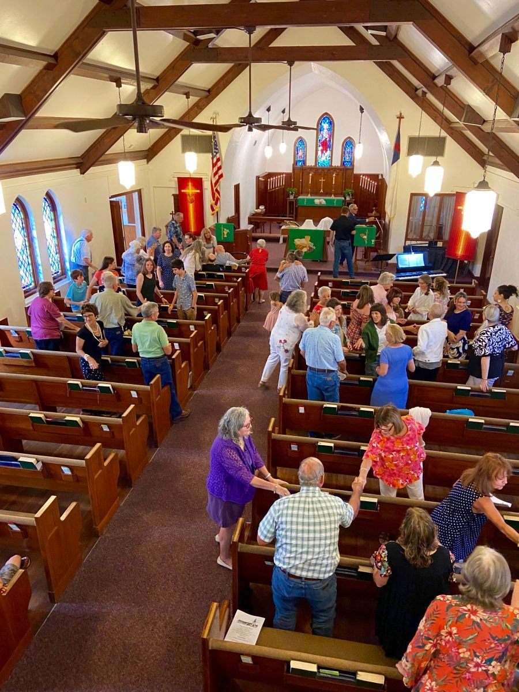

Plan a Visit

Join us Sunday
- 8:45 amAdult Bible Study
- 9 to 9:45 amSunday School (September to May)
- 10 amWorship with Holy Communion, also on Facebook Live
1106 Fiorella St, Castroville, TX 78009
Come as you are. Someone will be glad to show you around.

Worship from home
Can't be here in person? The 10 am service is streamed on Facebook Live every Sunday.